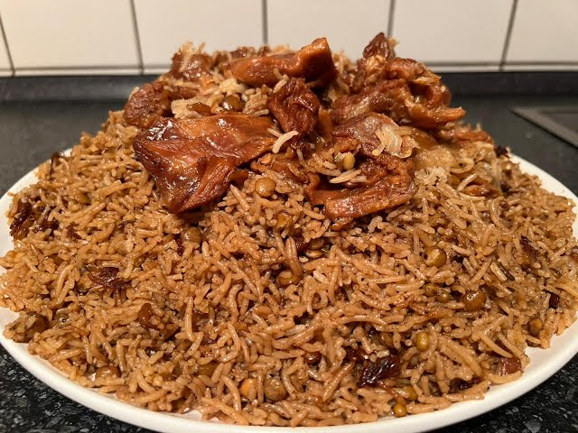
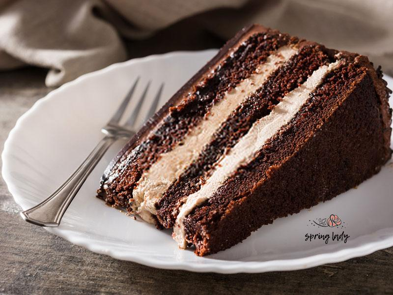

Ingredients:
- Rice Gard: Three cups
- Black eggplant: a number
- Mash: a cup
- Clare meat 250 grams
- Roman Badjan: a number
- Black, cinnamon and turmeric one teaspoon
- Salt a tablespoon
- 2 onions
- a garlic cubes
Instructions
-
First chop a number of onions and sauté
with a little oil in the boiler,
then add a little turmeric,
cinnamon, black rug and a few cherries
of boiling water and closed the lid
of the pan for half
an hour to cook well.
-
In the next step, chop a black eggplant and fry with
salt in the oil. Sprinkle the grated with some turmeric
and paprika and some Roman eggplant (tomato)
in the oil and then chop a Roman eggplant and fry on the mixture.
-
Pour some water on the Roman
eggplant and sprinkle the fried black
eggplant over it to cooked the door to cook well.
-
Then chop a medium onion in the oil to make
the color brown, then crush well in
the mortar and add some boiling water
to remove the dark color.
-
Stir a cup of mung bean you have pre -soaked
with some oil, then pour three cups
of rice on the car and then add the meat
juice, brown onion
juice, cinnamon and some black
rice to the rice and crave mixture
and stir well and faste the boiler.
-
In the final step, when the rice is softened,
place the cooked meat on the mixture
of rice and mung beans for 40 minutes.

Ingredients:
- 2–4 tbs char masala
- 2 teaspoons cumin seeds
- 1.5 lb lamb
- 350 grams julienned carrots
- 250 grams of raisins
- 1/4 C sesame oil
- 2 sliced onions
- 4 chopped garlic cloves
- salt
- 2 Tablespoons of sugar
- 3 Cups Rice
Instructions
-
To make this popular Afghan dish, first crush
the onion and fry
with some oil until golden.
Then add the turmeric and saute.
Remove half of the hot onion and set aside.
-
Add the meat to the hot onion and saute
until the color is darkened and the meat is accumulated.
Now add some boiling water and cook over
high heat. Then reduce the heat,
close the container door and allow
the meat for an hour to cook.
One quarter to half an hour before
the meat is fully baked,
add salt and allow the water to be very
low or completely.
-
place them in cold water for 1 to 2 minutes to soften.
Wash pistachios and almonds and skip the filter.
Pour half of the hot onion that
you have separated into the pan and place over
medium heat, then add the carrots and saute
for five minutes.
-
Make rice in a rinse.
Put the washed rice with water,
salt and oil on the gas heat and drain for 10 minutes.
Now it's time to caramel to make the
sugar of the plate. To
caramel, pour
it into a suitable container and place on very low heat without water.
Let the sugar start to melt.
-
Remove the sugar from heat.
This process is long and may take up to 5 minutes. Pour the pot a
little oil.
Pour the pot of rice. Then pour some of
the meat over the rice and pour from the carrot mixture
over the meat.

Ingredients:
- 8 ounces (225 g) Greek feta
- 4 ounces (115 g) Muenster or Monterey Jack cheese
- 2 1/2 ounces (70 g) fresh goat cheese
- 1/2 cup chopped mixed tender herbs and tender stems
- 4 scallions (2 ounces; 60 g), thinly sliced (1/2 cup)
- 2 large eggs (110 g), lightly beaten
- 1/4 teaspoon freshly ground black pepper
Instructions
-
In a medium bowl, combine feta, Muenster, goat cheese,
herbs,
scallions, eggs, and pepper, and toss
gently to combine. Cover and set aside.
-
Wrap spinach in a clean kitchen towel
or double layer of paper towels
and squeeze to remove excess moisture
(you should end up with about 6 ounces (170g) spinach)
Transfer to a medium bowl, along with feta,
goat cheese, herbs, scallions, eggs,
salt, and pepper, and toss gently
to combine. Cover and set aside.
-
Adjust oven rack to middle position
and preheat oven to 350°F (190°C).
Using a sharp knife, cut stack
of phyllo sheets in half to form
eighteen 13- by 9-inch sheets.
Stack together and cover with a sheet
of parchment and a clean kitchen towel.
-
In a small saucepan, melt butter over medium
heat and cook, swirling pan frequently
and taking care not to let butter solids
brown (lower heat as needed to medium-low
if butter begins to
pop and brown),
until foaming subsides
(an indication that water has been driven off),
about 5 to 7 minutes. Remove from heat.
-
Remove one phyllo sheet from stack
and transfer to clean work
surface,
with the long end of the sheet
running parallel to edge of counter.
Working lengthwise, brush half of phyllo
sheet that is closest to you
lightly but evenly with butter.
Fold sheet in half toward you
lengthwise, covering the buttered
portion of dough. Rotate sheet
90 degrees
so short side now faces you,
and brush entire surface of sheet
lightly but evenly with butter.
-
Using a 1/4 cup measure, place a scant
3 tablespoons (40g) filling on the bottom left-hand
corner of
sheet, about one inch from the bottom
edge. Using a spoon, form filling
into a rough triangle with its long
edge (hypotenuse) facing the bottom right
edge of the phyllo. Lift the
bottom right corner of the phyllo
and fold it over the filling and
gently press to form a right triangle.
-
Bake until golden and crisp,
20 to 23 minutes, rotating baking sheet
halfway through baking. Transfer baking
sheet to wire rack and let
boreks cool at least 5 minutes
before serving. Serve.

Ingredients:
- 1 1/2 cups (355 ml) warm water (105°F-115°F)
- 1 package (2 1/4 teaspoons) active dry yeast
- 3/4 cups (490g) bread flour
-
2 tablespoons extra virgin olive oil (omit if cooking pizza in a
wood-fired pizza oven)
- 2 teaspoons kosher salt
- 1 teaspoon sugar
Instructions
-
Bring yeast, flour and sugar (or maple syrup)
to room temperature. I generally
keep all of these out of the fridge an
hour before making the dough.
-
Firstly pour half cup luke
warm water to a large mixing bowl.
Dip your finger in the water
to check if it is just warm & not hot.
Hot water will kill the
yeast and won’t let the pizza dough rise.
-
Add 1 teaspoon yeast (3 grams)
to the warm water. You can
use instant yeast or active yeast.
More details in the tips section below.
If you prefer to go with low
yeast and let it rise slowly,
then add only 1/3 teaspoon yeast
-
Add 1 teaspoon raw sugar or maple syrup.
Avoid using refined white sugar.
-
The mixture must turn frothy and bubbly.
With instant yeast it won’t turn
very frothy but will still froth to a
minimum and you can see the yeast bubbling up.
Ingredients:
- 2 tablespoons olive oil
- 1 small onion, finely chopped
- 1 leek, washed and chopped
- 1 clove garlic, minced
- 2 pounds ground beef
- 2 teaspoons ground cumin
- 2 teaspoons ground cardamom
- 1 teaspoon salt
- 1 teaspoon pepper
- 1 tablespoon all-purpose flour
- 1 tablespoon water, or as needed
- 1 (14 ounce) package spring roll wrappers
- 1 quart oil for frying, or as needed
Instructions
-
Heat olive oil in a large skillet
over medium-low heat. Add onion,
leek, and garlic; cook and stir
until onion is transparent.
Add ground beef; cook and stir until
still slightly pink and about halfway done.
-
Season with cumin, cardamom, salt,
and pepper; mix well. Continue cooking until beef is browned and
crumbly.
Remove the skillet from heat.
-
Mix flour and water together in
a small bowl to make a thin paste.
Using one wrapper at a time,
fold into the shape of a cone.
-
Fill cone with beef mixture,
close the top, and seal with paste.
Repeat until wrappers or filling are used up.
-
Heat oil in a deep fryer or large saucepan
to 365 degrees F (170 degrees C).
There should be enough oil to submerge
sambusas. Fry sambusas, a few at a time,
in hot oil until golden brown.
- Remove to a paper towel-lined plate to drain.

Ingredients:
- 200g golden caster sugar
- 200g unsalted butter
- 4 large eggs
- 200g self-raising flour
- 2 tbsp cocoa powder
- 1 tsp baking powder
- ½ tsp vanilla extract
- 2 tbsp milk
- For the buttercream
- 100g milk chocolate
- 200g butter
- 400g icing sugar
- 5 tbsp cocoa powder
Instructions
-
Heat oven to 190C/170C fan/gas 5.
Butter the base and sides
of two 20cm round sandwich
tins and line the bases with baking parchment.
-
In a large bowl, beat together 200g golden caster sugar,
200g softened unsalted butter,
4 large eggs, 200g self-raising flour,
2 tbsp cocoa powder, 1 tsp baking powder,
½ tsp vanilla extract,
2 tbsp milk and a pinch of salt until
pale.
-
Divide the mixture between the prepared tins.
Bake for 20 mins or until a skewer
inserted into the centre of the cake comes out clean.
-
Leave to cool in the tin for 10 mins,
then turn out onto a wire rack to cool completely.
-
For the buttercream, put 100g chopped milk chocolate
in a heatproof bowl and melt
in the microwave, stirring every 30 secs.
Leave the melted chocolate to cool for 5 mins.
-
Mash 200g softened butter and 400g
icing sugar together with
a fork, then switch to a wooden spoon
or electric beaters, if you have them.
-
Sift in 5 tbsp cocoa powder
with a pinch of salt and pour
in the melted chocolate and 2 tbsp milk.
Mix again until smooth.
-
On a cake stand or large plate,
sandwich the cakes together
with half of the buttercream,
then spread the rest on top.
Decorate with chocolate shards, if you like.
-
To make chocolate shards:
melt 50g dark chocolate and pour
it onto a tray lined with
baking parchment or foil.
-
Now melt 25g milk chocolate and
25g white chocolate and drizzle
them
over the dark chocolate before it sets.
-
Shake the tray gently to level the mixture
then leave to set somewhere cool. Chop into shards.